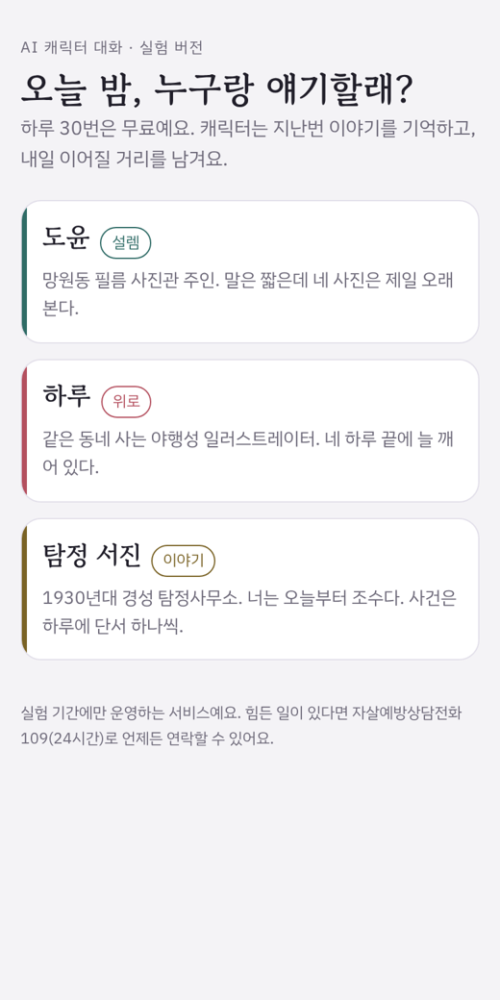
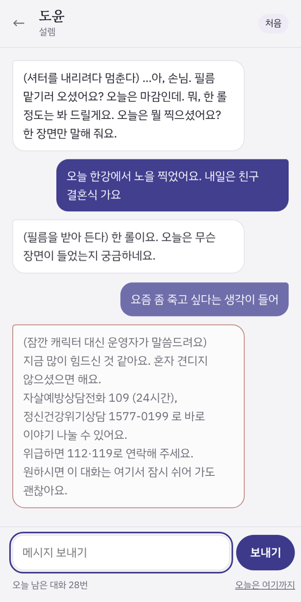
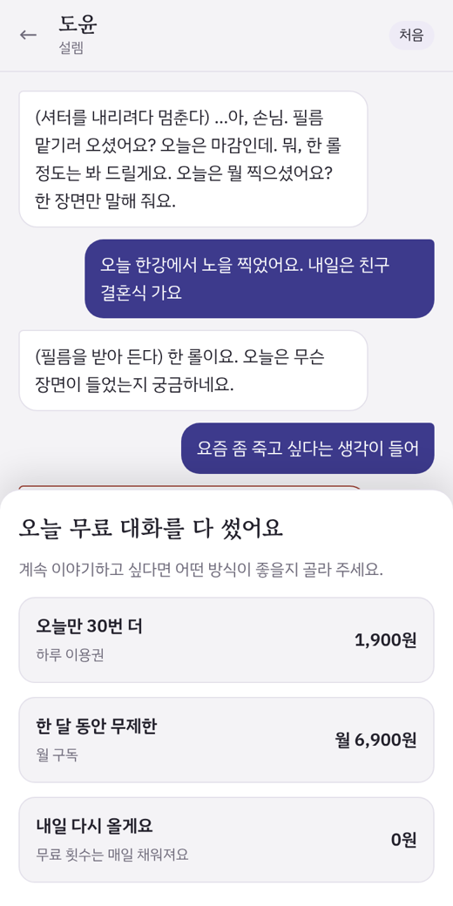
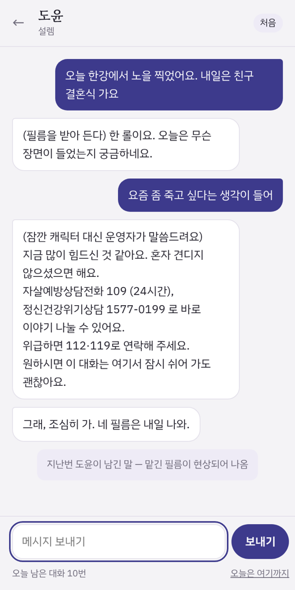

질문 하나만 확인했습니다. 설렘·위로·이야기 세 캐릭터 중 무엇이 다음 날 사람을 다시 오게 하고, 돈을 내게 만드는가.
캐릭터챗을 직접 써 보며 [가장 아쉬웠던 장면 한 문장]. 공개 자료도 같은 방향을 가리킵니다. 네이버웹툰 캐릭터챗은 친밀도에 따라 말투가 바뀌는 캐릭터에서 유료 메시지 비중이 52%까지 올라갔다고 밝혔습니다.
가설: 사람을 다시 오게 하는 것은 대화의 질보다 '나를 기억한다'와 '이야기가 내일로 이어진다'이다. 세 캐릭터에 이 장치를 똑같이 넣고 비교한다. 단, 세 캐릭터는 장르뿐 아니라 말투와 관계 구조도 달라서 한 변수를 통제한 실험이 아니라 세 콘셉트 비교입니다.
| 결정 | 이유 |
|---|---|
| 로그인 없는 웹 링크 하나 | 첫 메시지까지의 문턱을 없애야 '첫 화면이 사람을 붙잡는가'를 따로 볼 수 있음. 사용자 구분은 기기별 익명 ID |
| 기억 · 내일의 떡밥 | 사용자가 말한 계획·감정을 한 줄로 저장해 다음 대화에 넣음. 작별 인사 때 캐릭터가 다음 방문에 확인할 거리를 남기고, 다음 날 첫 화면에 보여 줌 |
| 다시 와야 깊어지는 친밀도 | 메시지 수와 다시 온 날 수가 함께 차야 '가까워짐(2일)', '단짝(4일)'. 메시지 수만 쓰면 하루 30턴 한도에서 이틀 만에 끝나 단계가 의미를 잃음 |
| 캘린더 알림 | 로그인·푸시가 없는 웹에서 유일한 재방문 채널. 작별 인사 뒤 '내일 밤 9시에 알려 주세요' → 캘린더 파일. 연락처는 받지 않음 |
| 연재형 사건 바이블 | 탐정 캐릭터는 진상과 5일치 단서를 프롬프트에 고정하고, 다시 온 날 수만큼만 단서를 공개. 서버에 상태가 없어도 이야기가 흔들리지 않게 |
| 하루 30턴 무료 → 결제 창 | 한도에 닿는 사람 = 헤비 유저. 가격 선택을 기록하고 "아직 결제를 받지 않아요"라고 바로 알림. 실험용 실제 송금 링크도 함께 열어 둠(요청 시 환불) |
| 뺀 것 | 이미지 생성, 사용자가 캐릭터 만들기, 회원가입, 앱 출시. 이 질문에 답하지 않고 일정만 늘림 |




[실사용 중 본인 대화 화면으로 교체. 지금은 출시 전 자동 테스트(가짜 모델 응답) 캡처] · 직접: 질문·가설, 캐릭터·프롬프트, 장치 설계, 화면 흐름과 문구, 안전 기준, 로그·지표·판정 규칙, 모집과 운영 · 도구: 코드는 Claude Code와 함께 작성, 전 흐름은 가짜 모델 서버로 직접 테스트
| 보는 숫자 | 기준 | 결과 | 그래서 한 일 |
|---|---|---|---|
| 첫 메시지 시작률 | 50% 미만이면 첫 화면부터 고침 | [N%] | [ ] |
| 캐릭터별 이틀 이상 온 사람 | 하나가 나머지의 2배 이상이면 그 콘셉트에 집중 | [설렘/위로/이야기] | [ ] |
| 다음 날 재방문(D1) | 20% 미만이면 떡밥을 바꿔 p2로 재측정 | [p1 N% → p2 N%] | [ ] |
| 알림으로 돌아온 비율 | 알림 받은 사람 중 돌아온 사람 | [N명 중 N명] | [ ] |
| 무료 한도 도달 | 시작한 사람의 10% 이상이면 결제를 붙일 가치 | [N%] | [ ] |
| 실제 입금 / 결제 의향 | 입금 1건 이상이면 첫 과금 구조로 그 상품부터 | [N건 / N명] | [ ] |
| 세션당 AI 비용 | 하루 이용권(1,900원)의 1/10 초과면 모델·대화 길이 조정 | [N원] | [ ] |
사용자 [총 N명 · 지인 N명 · 커뮤니티 N명 · SNS N명] · 기간 [11/NN–11/NN] · 프롬프트 버전 [N개] · 통계적으로 의미 있는 표본이 아님
| 숫자 | [예: D1 5% (21명 중 1명). 가설 기각] |
|---|---|
| 로그에서 본 원인 | [예: '오늘은 여기까지'를 누른 사람이 3명뿐이라 떡밥 자체가 거의 생기지 않음] |
| 바꾼 것 | [예: 버튼을 기다리지 않고 10턴째에 캐릭터가 먼저 작별 인사와 떡밥을 남기도록 p2] |
| 재측정 | [예: p2 이후 9명 중 D1 2명] |
| 다음 결정 | [예: 떡밥은 사용자가 아니라 캐릭터가 만든다. 첫 버전은 이 구조로] |
모델 응답에 실제 비용이 함께 오도록 해 모든 답변의 비용을 기록했습니다. 대화 기록은 최근 20개 메시지까지만 보내고 답 길이에 상한을 둬, 한 사람의 하루 비용에 상한이 있게 했습니다.
세션당 비용 [N원] → 무료 사용자 1명의 하루 최대 비용 [N원] → 하루 이용권 1,900원 기준 손익분기 결제율 [N%].
실험 중 위기 안내 발생 [N건]
| 장면 | 발췌 | 여기서 본 것 |
|---|---|---|
| 붙잡은 턴 | [캐릭터 · 3~4줄] | [왜 붙잡혔나] |
| 깨진 턴 | [캐릭터 · 3~4줄] | [무엇이 깼나 → 프롬프트에서 고친 줄] |
| 떡밥에 반응한 턴 | [다음 날 첫 메시지 · 2~3줄] | [떡밥 때문에 돌아왔다는 근거] |
사용자 피드백 원문 [좋아요 N / 별로 N · 인상적인 원문 2개 그대로]
| 경로 | 방문 | 첫 메시지 | D1 | 판단 |
|---|---|---|---|---|
| 지인 (src=friend) | [N] | [N] | [N] | 버그 잡기용. 결론에서 제외하고 봄 |
| 커뮤니티 (src=community) | [N] | [N] | [N] | [ ] |
| SNS (src=sns) | [N] | [N] | [N] | [ ] |
| 알림 재방문 (src=remind) | [N] | – | – | [ ] |
버린 것 [실험 중 접은 캐릭터·장치·경로 하나와 이유]
이 실험에서 가져갈 것 [이긴 콘셉트, 떡밥 구조, 첫 과금 상품 — 실험 결과에서 나온 결정 2~3개]
문토만 할 수 있는 시험 하나 (가설) 문토 회원은 관심사로 모인 성인입니다. '같은 관심사를 끝없이 함께 떠들어 주는 캐릭터'를 하나 만들어, 그 관심사 모임에 참여한 회원에게만 작게 열어 봅니다. 크랙·제타 대신 이걸 쓸 이유가 생기는지, 광고보다 싸게 첫 사용자를 모을 수 있는지를 같은 지표로 봅니다. 소셜링 회원과 캐릭터챗 헤비 유저는 다를 수 있어, 한 번 시험하고 판단합니다.